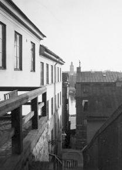
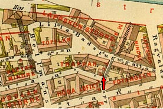
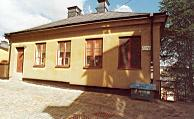
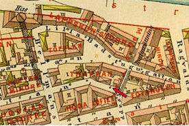
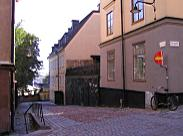
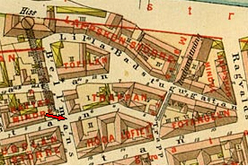
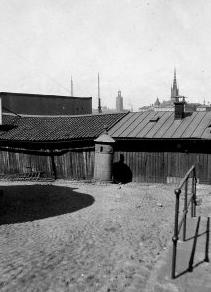
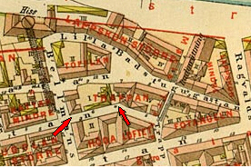
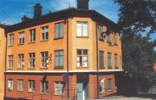

Södermalm i tid och rum. Stockholm


Tavastgatan 2, Maria Trappgränd 4. 1926

Tavastgatan 2. Huset uppfört 1864.

Tavastgatan 2- 4. 1926


 2004. Tavastgatan 1-3.
2004. Tavastgatan 1-3.
|
  Tavastgatan 6. 1926 |
  Tavastgatan 6. Huset mot Bastugatan uppfört 1760, tillbyggt åt Bellmansgatan och Tavastgatan 1880. |